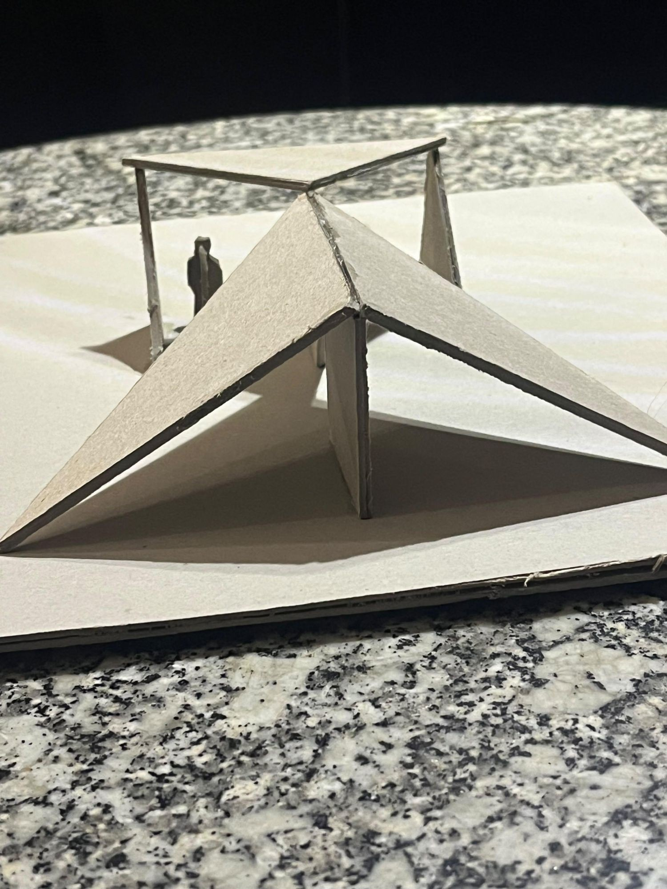
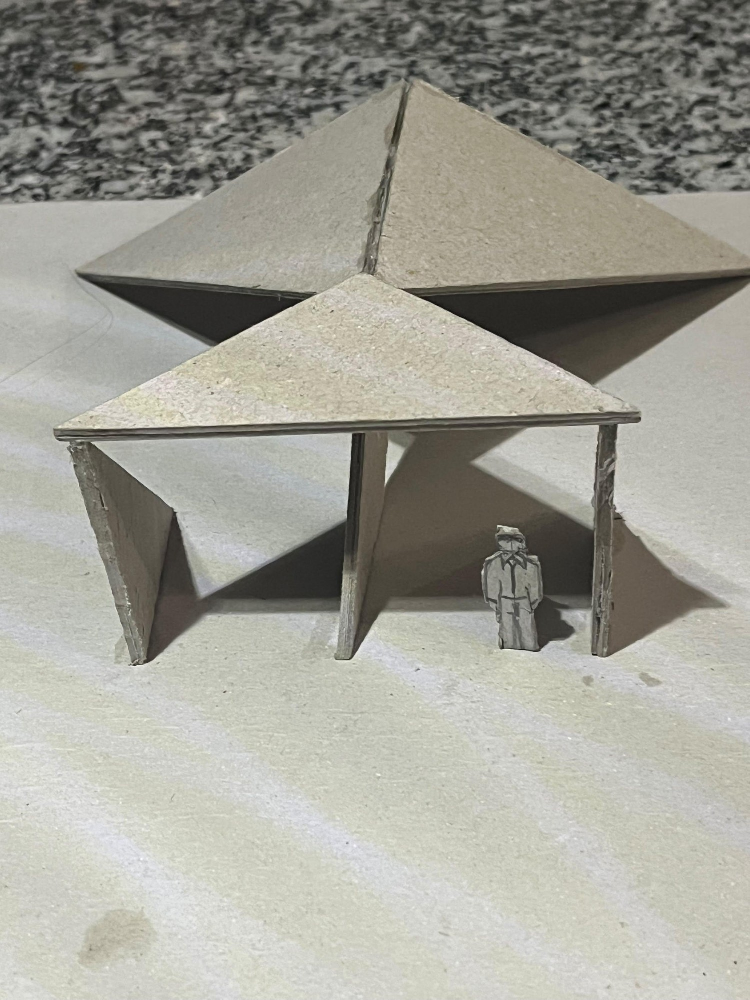
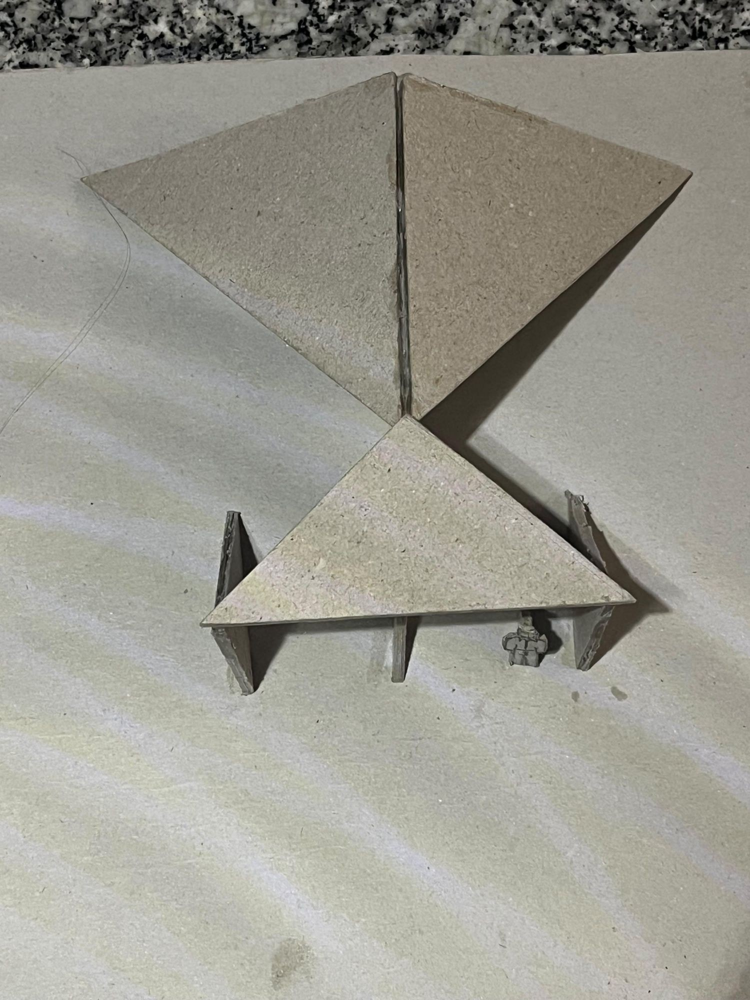

1
2
3Nous sommes partis d’un tangram de 15 cm, doublé et collé pour que chaque pièce soit rigide. Notre première proposition était trop fermée : la lumière et la vue n’y entraient pas. Nous avons donc cherché un abri plus ouvert, que l’on traverse.
Nous nous sommes donné trois règles. Nous utilisons les sept pièces. Aucune ne reste posée à plat sur le sol. Et chacune arrive à sa place par un seul des mouvements du tangram : translation, rotation ou pliage.
Nous avons plié les deux grands triangles de 30° autour de leur côté commun. Ce pli monte à 5,3 cm, la hauteur du carré : toutes les pièces debout viennent se glisser dessous. Il devient l’axe de symétrie de l’abri, et l’axe de la vue.
L’abri s’ouvre d’est en ouest : nous entrons par l’est et nous sortons face au coucher du soleil. À l’ouest, la paroi du milieu partage l’ouverture en deux cadrages. Le soir, la lumière rasante entre jusqu’au fond ; à midi en été, les pentes mettent le parcours à l’ombre.
Les deux pentes écartent la pluie et la neige de chaque côté du passage, qui reste au sec. Aucune paroi droite ne fait face au vent : il glisse sur le dos des pentes. L’abri est ouvert aux deux bouts, donc l’air le traverse.
Il entre par l’est sous le petit toit, passe un moment à ciel ouvert, puis se glisse sous le pli et sous la paroi penchée, et ressort face à la vue. Il garde au moins 4 cm au-dessus de la tête : il est protégé sans être enfermé.